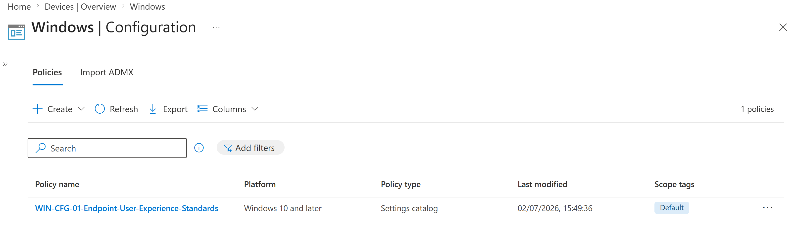
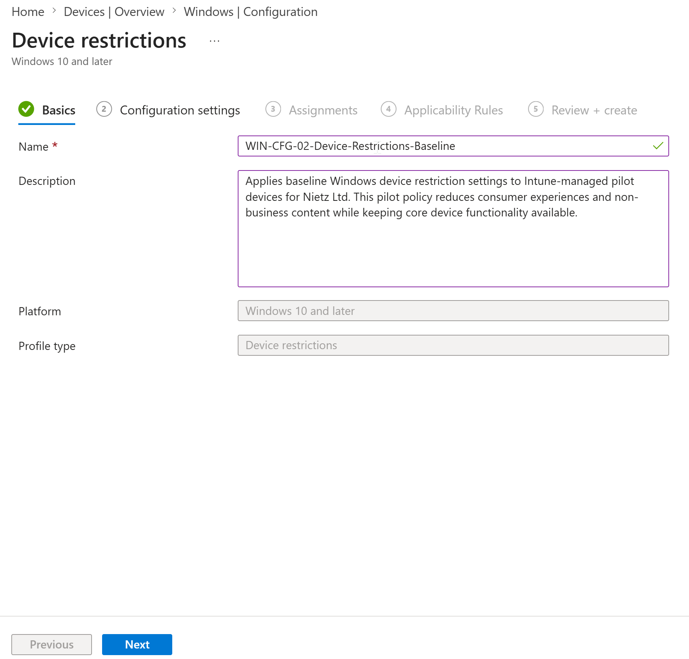
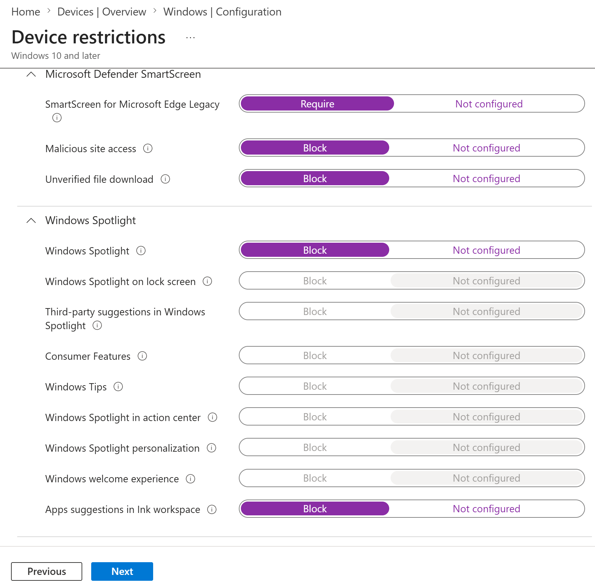
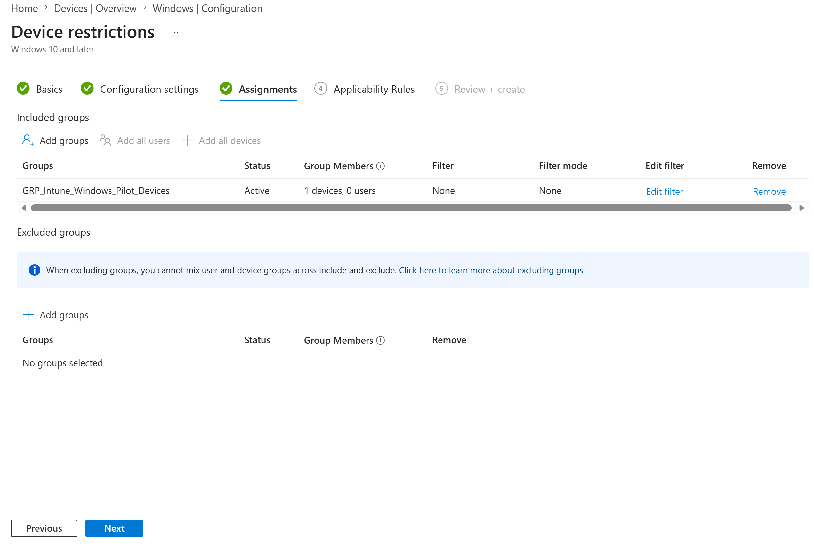
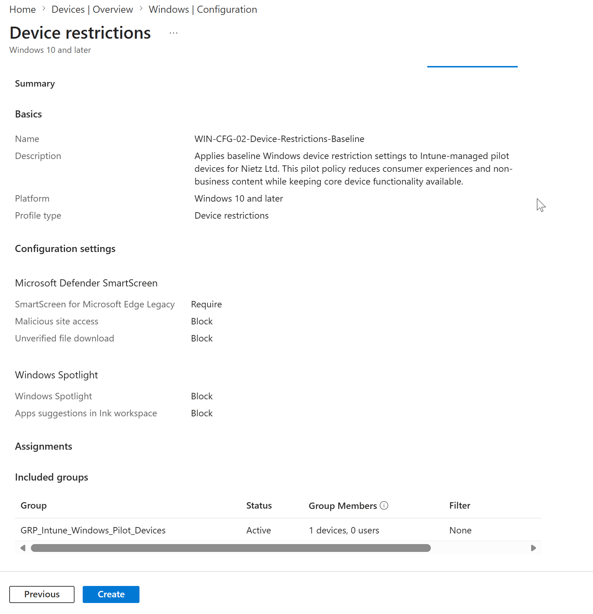
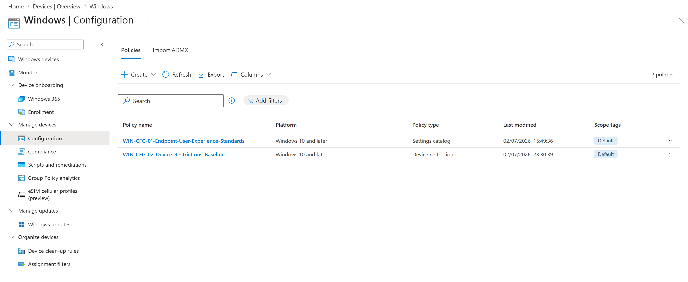
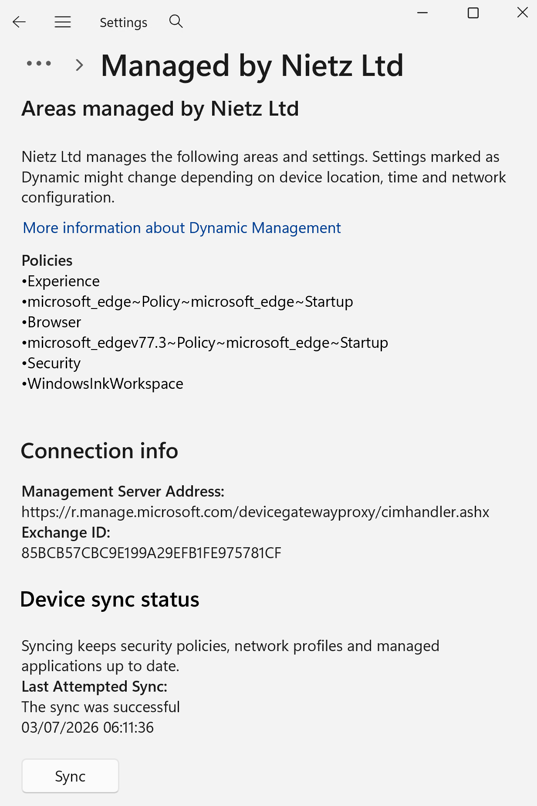
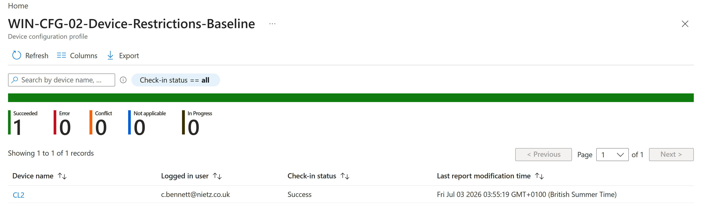
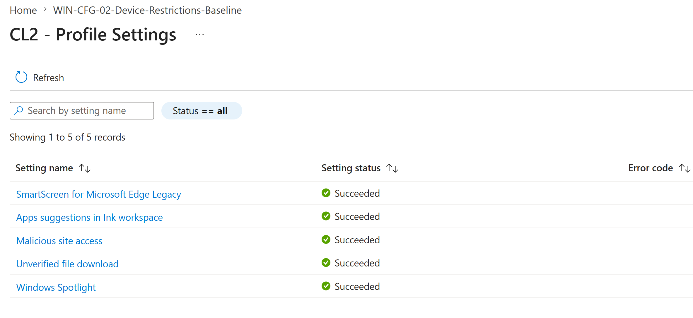

Lab 20: Intune Device Restrictions Baseline
Created a Windows device-restrictions profile, assigned it to a controlled Intune pilot group, synchronised CL2 and confirmed that every configured setting deployed successfully.
Overview
This lab introduced a baseline Windows device restrictions policy for the Intune-managed pilot estate. The configuration focused on low-risk restrictions that reduce consumer-facing experiences and apply basic SmartScreen-related controls without blocking core device functionality.
The policy was deployed only to a dedicated pilot device group containing CL2. This kept the rollout controlled and provided clear evidence of policy creation, assignment, device sync, deployment status and per-setting success.
Objective
The objective was to create WIN-CFG-02-Device-Restrictions-Baseline, assign it to GRP_Intune_Windows_Pilot_Devices, and validate successful deployment on the pilot device CL2.
Environment
| Component | Value |
|---|---|
| Company | Nietz Ltd |
| Tenant / public domain | nietz.co.uk |
| Intune profile | WIN-CFG-02-Device-Restrictions-Baseline |
| Profile type | Windows 10 and later - Device restrictions |
| Target group | GRP_Intune_Windows_Pilot_Devices |
| Target device | CL2 |
| Primary user | c.bennett@nietz.co.uk |
| Deployment method | Device-targeted Intune configuration profile |
| Previous lab dependency | Lab 19: Intune Configuration Profiles |
Configuration
1. Confirmed the existing Intune configuration profile baseline
I confirmed the Windows configuration policies area before creating the new device restrictions profile. The only existing profile at the starting point was the Lab 19 endpoint user experience profile.

2. Created the device restrictions profile
I created a Windows device restrictions profile using a clear naming convention and a description that explained the purpose of the pilot policy.

WIN-CFG-02-Device-Restrictions-Baseline and created as a Windows 10 and later device restrictions profile.3. Configured baseline restriction settings
I configured a limited set of safe device restriction settings. The profile required SmartScreen for Microsoft Edge Legacy, blocked malicious site access and unverified file downloads, and blocked selected Windows Spotlight and Ink workspace suggestions.

4. Assigned the profile to the Windows pilot device group
I assigned the profile to GRP_Intune_Windows_Pilot_Devices, which contained one pilot device and no user members.

GRP_Intune_Windows_Pilot_Devices with one device member, no filters and no excluded groups.5. Reviewed the final configuration before creation
I reviewed the profile summary before creating it. The review page confirmed the profile name, description, configured settings and assignment target.

Validation
6. Confirmed the profile was created in Intune
I returned to the Windows configuration policies list and confirmed the new device restrictions profile was visible alongside the existing Lab 19 profile.

WIN-CFG-02-Device-Restrictions-Baseline appeared in the Intune policy list as a device restrictions profile.7. Synced CL2 with Intune
I triggered a manual Intune sync from CL2 using the Windows work or school account management page. The device showed a successful sync with Nietz Ltd management.

8. Confirmed successful deployment to CL2
I checked the device assignment status report and confirmed the profile deployed successfully to CL2 for Chloe Bennett with no errors, conflicts, not-applicable results or in-progress status.

9. Verified per-setting success on CL2
I opened the CL2 profile settings report and confirmed each configured setting reported a succeeded state.

Key Technical Outcomes
This lab demonstrated Intune device restrictions profile creation, controlled device-group assignment, manual endpoint sync, device deployment status validation and per-setting reporting for a pilot Windows endpoint.
Summary
- Confirmed the existing Windows configuration profile baseline before adding a new policy.
- Created
WIN-CFG-02-Device-Restrictions-Baselineas a Windows device restrictions profile. - Configured a small, safe set of SmartScreen, Windows Spotlight and Ink workspace restriction settings.
- Assigned the profile to
GRP_Intune_Windows_Pilot_Devices. - Synced CL2 with Intune after policy creation.
- Confirmed the policy deployed successfully to CL2.
- Verified all configured settings reported succeeded status for CL2.